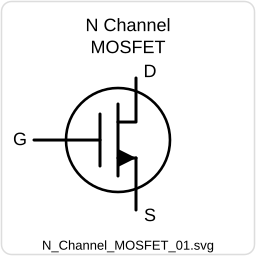
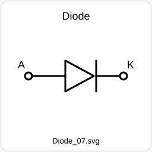
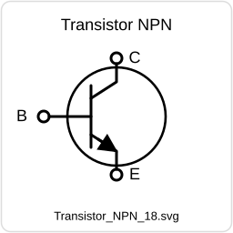
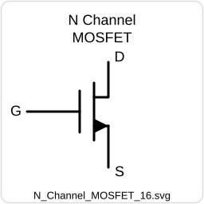

QS Gen is the authoring and export workspace. SVG Maker is the companion vector editor for reusable circuit symbols and diagram components. Together they support a full question-bank workflow from composer to paper, key, JSON, and selectable text PDF.
Create question content, compose math, draw or import figures, build reusable SVG symbols, and export official-style papers without leaving the local workspace.
Write question text, add metadata, marks, options, and answer-key data.
Use the statement composer for spacing, math, Greek symbols, fractions, roots, and operators.
Place canvas figures, labels, graphs, circuits, and imported vector assets.
Carry text, math, SVG, and image data into preview, JSON, PDF, and selectable PDF paths.
Generate paper PDFs, selectable text PDFs, answer keys, and reusable JSON packages.
The main question-bank studio for composing, arranging, previewing, and exporting exam content.
The companion vector editor for reusable circuit symbols, math labels, and custom diagram components.

The app separates image-faithful exports from selectable text exports so each path can do what it is best at.
High-resolution flattened frames for visual fidelity across canvas content, figures, and diagrams.
Selectable/searchable text with math rendering, line spacing, and structured question layout.
Open EC2024-style selectable PDF layout with minimal framing and better paper-like flow.
Question-bank package with content, metadata, image assets, and export-ready question data.
Answer-key exports for checking, review, and paired paper distribution.
Reusable custom symbol packages from SVG Maker for import into QS Gen workflows.
The project is intentionally local-first and mostly browser-native, with a desktop wrapper for convenience.
HTML, CSS, and JavaScript power the main UI, canvas, SVG, rendering, and export logic. Node.js supports regression scripts and the Electron wrapper.
KaTeX handles fast math rendering. MathJax is used as a fallback/preview support path in selected workflows. Custom LaTeX repair helpers keep mixed prose and math stable.
jsPDF supports image-based paper/key exports. Browser print supports selectable text PDFs. Poppler is used for PDF render inspection during verification.
Electron and electron-builder package the studio as a desktop app while keeping the browser version available as a standalone workspace.
Designed for engineering, physics, math, and technical paper creation where diagrams and equations matter as much as text.
Create MCQ, MSQ, and NAT style question sets with subject, topic, marks, options, and answer data.
Compose Greek symbols, physics operators, roots, fractions, subscripts, superscripts, and structured equations.
Build and import reusable circuit symbols, MOSFETs, BJTs, passives, and custom vector diagrams.
Generate printable and selectable papers for practice sets, internal tests, and review packets.
Create SVG symbol libraries once and reuse them across future question papers.
Use the included stability script to protect sensitive rendering and export behavior from accidental breakage.